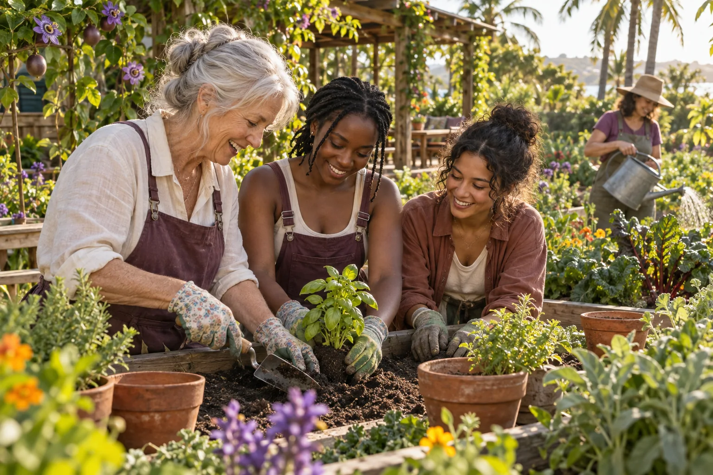

A skill shared
Learning a tool and helping another person creates capability and a new mentoring relationship.

Recognise contribution, encourage participation and let leadership grow through helping one another.
C-Hour is a proposed mechanism for care and reciprocity. One verified hour of community contribution equals one C-Hour. It recognises time given, with no economic equivalent. The accompanying story records care, learning, relationships and results, making otherwise overlooked contributions visible without assigning them a price.
The Incomplete Ledger names the gap this addresses: ordinary financial accounts miss much of the care that sustains a community. Within 500 Queens, the idea is to recognise that work, measure progress and make participation encouraging, especially for young people.

AI-generated concept illustration.
Help someone learn a tool, join a restoration activity, contribute to community science, support a creative production or share a useful skill. Each activity can connect participants with women leaders and mentors through work they find worthwhile.
Give the activity a clear purpose, an accessible starting task and someone to learn with. Confirm the contribution and time with the people involved, then add what changed or was learned. A return visit can reveal whether the original effort helped and what is needed next.
Learning a tool and helping another person creates capability and a new mentoring relationship.
Record the work completed and return to observe changes over time.
Recognise observations, experiments, repairs and shared learning alongside the finished result.
Notice the care given, people helped and collective result behind an event or production.
The Gamify Democracy sequence turns a local need into a cooperative challenge. Scan the situation with the people involved. Design a response. Try it in a model or rehearsal. Carry out the activity. Share the result so others can learn from it.
A community garden or accessible public-space project can make each step visible. Participants might compare options, divide tasks, learn skills and return to see what changed. Learning milestones and recognition should celebrate curiosity, persistence, care and helping others as well as completed work.
Young people help shape the challenges and the forms of recognition that encourage them to return. AI Queens could help explain an activity, explore options and support reflection. Human relationships give the record its meaning.
A progress record brings together the contribution, recognised time, learning and observed result. It creates encounters with leadership before someone has a business, qualification or investment pitch. Listening, organising, encouraging others and following through are already leadership practice.
Mentors can recognise developing capability and invite further learning. Review who joins, who returns, what people learn and how reciprocal help develops. Grants, wages and investment remain in the programme's financial accounts. C-Hour belongs to its account of community contribution and progress.